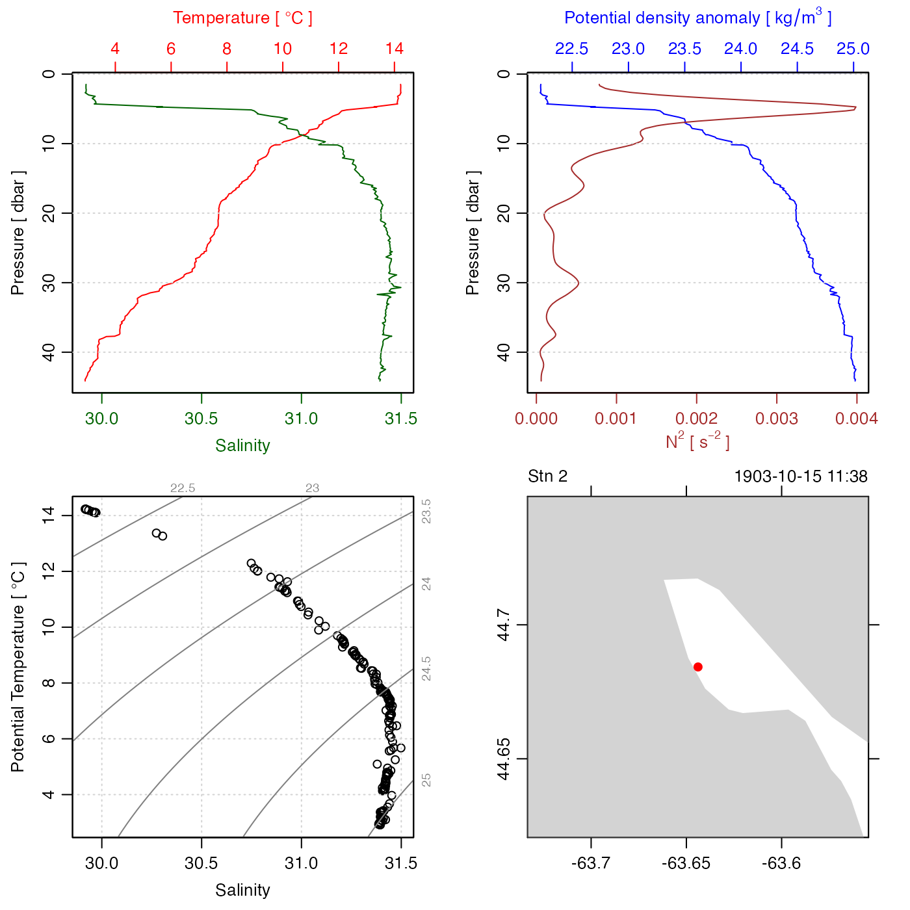
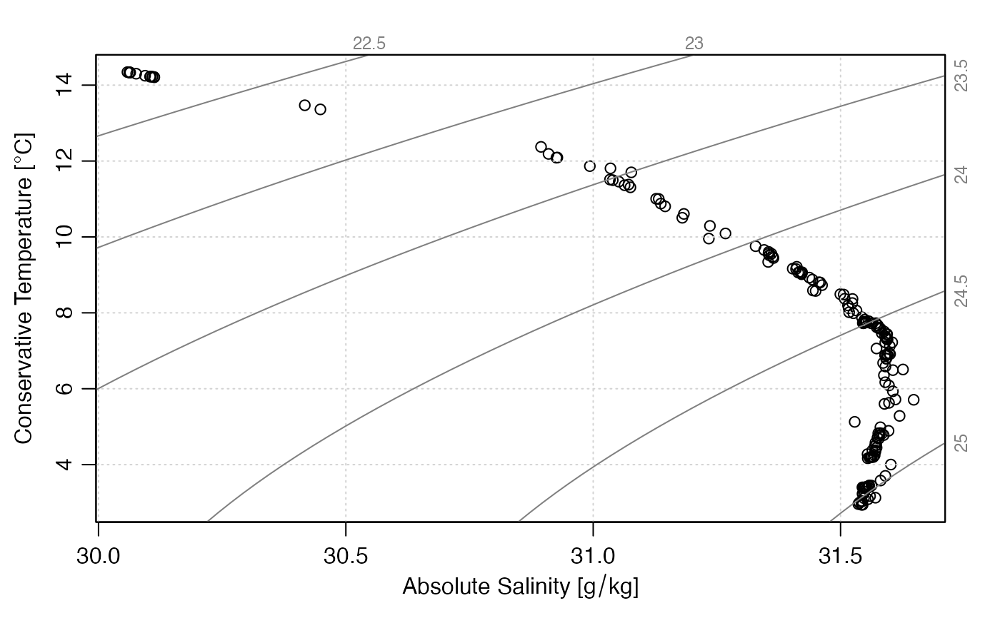

Read an oceanographic data file, auto-discovering the file type from the
first line of the file.
This function tries to infer the file type from the first line, using
oceMagic(). If it can be discovered, then an
instrument-specific file reading function is called, with the file
and with any additional arguments being supplied.
read.oce(file, ...)
| file | a connection or a character string giving the name of the file to load. |
|---|---|
| ... | arguments to be handed to whichever instrument-specific reading function is selected, based on the header. |
An oce object of that is
specialized to the data type, e.g. ctd,
if the data file contains ctd data.
The file type is determined by oceMagic(). If the file
type can be determined, then one of the following is called:
read.ctd(), read.coastline()
read.lobo(), read.rsk(),
read.sealevel(), etc.
#> Warning: this CNV file has temperature in the IPTS-68 scale, and this is stored in the object; note that [["temperature"]] and the sw* functions will convert to the modern ITS-90 value